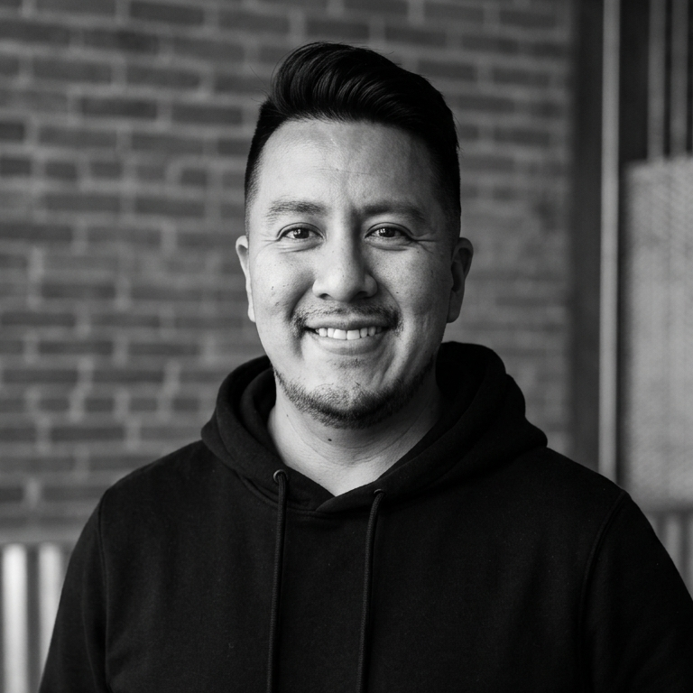

Juan Pablo Sánchez
|
Las organizaciones crecen, compiten y se transforman cuando logran conectar las necesidades de sus clientes con su estrategia, su modelo operativo y las capacidades de sus equipos.
Mi aporte está en trabajar sobre ese punto: conectar negocio, procesos, personas, datos y tecnología para transformar necesidades en soluciones concretas, simples y sostenibles.

Sobre Mí
Mi recorrido combina experiencia en operaciones, calidad, mejora continua, gestión de proyectos, atracción de talento, desarrollo, People Analytics y transformación organizacional.
Lideré equipos e iniciativas en organizaciones de salud, tecnología, servicios financieros y consumo masivo, acompañando procesos de profesionalización, mejora de modelos de trabajo, implementación de indicadores, evolución de prácticas de talento e incorporación de tecnología e IA aplicada a la gestión.
Actualmente participo en proyectos de consultoría freelance en Entropyx y Knowment, con foco en procesos, automatización, talento, tecnología e IA aplicada a la gestión.
Mi experiencia en organizaciones
Hacé clic en cualquiera de las siguientes áreas para conocer los puestos y organizaciones donde obtuve y apliqué estas experiencias.
Liderazgo y Project Management
Liderazgo de equipos, gestión de iniciativas, priorización, seguimiento de avances, coordinación de stakeholders y gobierno de procesos en contextos de transformación.
Implementación y adopción de sistemas
Acompañamiento a líderes y usuarios en transiciones tecnológicas. Gestión del impacto, relevamiento AS IS / TO BE, diseño de capacitaciones y testing funcional (UAT).
Diseño de servicios y Procesos
Relevamiento, AS IS / TO BE, service blueprint, documentación funcional, mejora continua y diseño de procesos para nuevos servicios, operaciones y áreas de gestión.
Gestión de Talento & HRBP
Soporte estratégico como socio de negocio cercano a operaciones críticas y áreas de IT. Diseño de programas de desempeño, onboarding, potencial (Nine Box) y planes de desarrollo.
People Analytics & HRIS
Construcción de indicadores, tableros ejecutivos, limpieza y unificación de bases, criterios de lectura, reportería de gestión y soporte funcional en HRIS / HR Tech.
Automatización & IA
Diseño de soluciones funcionales y técnicas con automatización, IA generativa y herramientas low-code/no-code para ordenar información, mejorar trazabilidad y reducir tareas manuales.
Proyectos
Explorá una selección de proyectos reales organizados por especialidad. Incluyen iniciativas internas, implementaciones, mejoras de procesos, transformación de áreas, HR Tech, datos, talento y adopción de sistemas.
Procesos y mejora continua
Reingeniería operativa, mejora continua, Lean Six Sigma, rediseño de procesos, documentación funcional e implementación de nuevos modelos de trabajo.
Ver ProyectosDiseño de servicios
Diseño de nuevos servicios y experiencias operativas, desde blueprints y flujos de usuario hasta requerimientos funcionales e implementación.
Ver ProyectosImplementación y adopción de sistemas
Implementaciones funcionales, mejoras de sistemas, UAT, capacitación, documentación, soporte a usuarios y gestión del cambio en HRIS, ERP, CRM y ATS.
Ver ProyectosAtracción de Talento y Marca Empleadora
Procesos de selección end-to-end, operaciones de alta demanda, perfiles críticos, experiencia de candidatos, marca empleadora, ATS, indicadores y mejora de procesos.
Ver ProyectosTransformación cultural
Programas de transformación, gestión del cambio, liderazgo, agilidad, OKRs, desarrollo de capacidades y acompañamiento a líderes y equipos.
Ver ProyectosAprendizaje y Desarrollo
Programas de aprendizaje, onboarding, liderazgo, formador de formadores, desempeño, potencial, talent review, reskilling, upskilling y rutas de desarrollo.
Ver ProyectosCompensaciones
Participación en benchmarks, análisis de bandas salariales y propuestas de compensación para perfiles críticos, IT y posiciones de liderazgo.
Ver ProyectosPeople Analytics
Construcción de indicadores, tableros ejecutivos, reportería, limpieza de bases, criterios de lectura, presupuesto, control de gestión y soporte a decisiones.
Ver ProyectosAutomatización & IA
Soluciones con IA generativa, automatización, low-code/no-code y herramientas digitales para ordenar información, mejorar trazabilidad y reducir tareas manuales.
Ver ProyectosMi formación, cursos y certificaciones
Mi formación combina administración, recursos humanos, coaching, procesos, agilidad, datos, tecnología e inteligencia artificial aplicada a la gestión.
Voluntariado & Impacto Social
Participo en espacios de formación y empleabilidad, compartiendo herramientas prácticas de administración, procesos, búsqueda laboral y desarrollo profesional.
Formador en Administración
Fundación Empujar • Mar 2026 - ActualidadDicto contenidos de Administración a estudiantes, conectando conceptos de gestión, procesos, organización y toma de decisiones con situaciones reales de trabajo para facilitar su inserción laboral.
Formador en Empleabilidad
Semillero Digital • Mar 2026 - ActualidadFacilito espacios formativos de empleabilidad, traduciendo herramientas de búsqueda laboral, posicionamiento y entrenamiento para entrevistas en contenidos prácticos y orientados a la adopción.
Contacto
Si querés conocer más sobre mi experiencia, proyectos o líneas de trabajo, podés contactarme por email, LinkedIn o WhatsApp.
Mis Canales
Podés contactarme de forma directa a través de mi correo o LinkedIn.